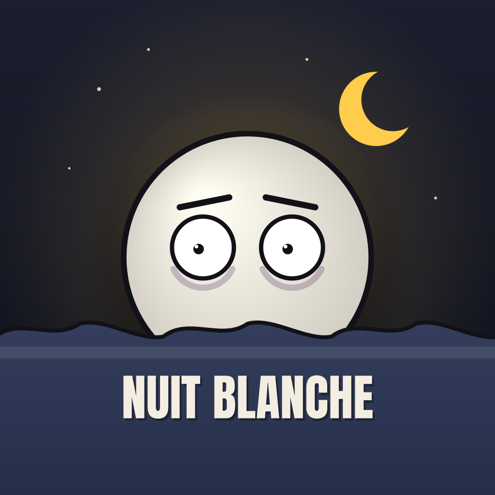

NUIT BLANCHELes histoires qui empêchent de dormir.
NUIT BLANCHE est une chaîne de courtes vidéos verticales dessinées qui racontent des histoires, soit inventées et terrifiantes, soit tirées de faits réels, avec à la fin un choix laissé au spectateur.
Outil de publication
Ce site héberge aussi l'outil interne de NUIT BLANCHE qui envoie nos propres vidéos dans les brouillons de notre compte TikTok. Le créateur les relit, ajoute la légende et les publie lui-même depuis l'application TikTok. L'outil n'est utilisé que pour le compte de son propriétaire.
Contact : arwin.nirmaladas@gmail.com